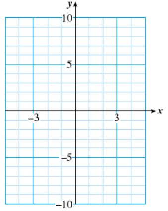

Section 6.1 Extracting Roots
Subsection Quadratic Equations
So far you have learned how to solve linear equations. In linear equations, the variable cannot have any exponent other than 1, and for this reason such equations are often called first-degree. In this chapter we'll consider second-degree equations, or quadratic equations.
Quadratic Equations.
A quadratic equation can be written in the standard form
where \(a,~b,\) and \(c\) are constants, and \(a\) is not zero.
Example 6.1.
Some examples of quadratic equations are
The first equation is already written in standard form, with \(a=2,~b=5\) and \(c=-3\text{.}\) In standard form, the other two equations are
The numbers \(a,~b,\) and \(c\) are called parameters. They are the coefficients of, respectively, the quadratic term (the \(x^2\)-term), the linear term (the \(x\)-term), and the constant term.
Caution 6.2.
The \(x^2\)-term and the \(x\)-term in a quadratic expression are not like terms, so they cannot be combined.
Reading Questions Reading Questions
1.
What is a quadratic equation? Give an example.
Subsection Graphs of Quadratic Equations
Quadratic equations appear in a variety of applications. A quadratic equation in two variables has the form
Its graph is not a straight line, but a curve called a parabola. The simplest, or basic, parabola is the graph of \(y=x^2\text{,}\) shown in the figure.
| \(x\) | \(-3\) | \(-2\) | \(-1\) | \(0\) | \(1\) | \(2\) | \(3\) |
| \(y\) | \(9\) | \(4\) | \(1\) | \(0\) | \(1\) | \(4\) | \(9\) |

Look Ahead.
In the equation for the basic parabola, \(y=x^2\text{,}\) we have \(a=1,~b=0,\) and \(c=0\text{.}\) If the parameters have different values, the appearance or location of the graph will be altered. Example 6.3 illustrates a parabola that is shifted downward by 4 units.
Example 6.3.
Graph \(~~y=x^2-4\)
We make a table of values and plot the points. The graph is shown at right.
| \(x\) | \(-3\) | \(-2\) | \(-1\) | \(0\) | \(1\) | \(2\) | \(3\) |
| \(y\) | \(5\) | \(0\) | \(-3\) | \(-4\) | \(-3\) | \(0\) | \(5\) |

Reading Questions Reading Questions
2.
The basic parabola is the graph of what equation?
Subsection Solving Quadratic Equations
Consider a simple quadratic equation,
This equation tells us that \(x\) is a number whose square is 16. Thus, \(x\) must be a square root of 16. Now, 16 has two square roots, \(4\) and \(-4\text{,}\) so these are the solutions of the equation.
We can think of the solution process in the following way. Because \(x\) is squared in the equation, we perform the opposite operation, or take square roots, in order to solve for \(x\text{.}\)
Look Closer.
Remember that every positive number has two square roots, so the equation has two solutions, \(x=4\) and \(x=-4\text{.}\) We can also see the two solutions on a graph. The figure at right shows the graph of \(y=x^2\) and a horizontal line at \(y=16\text{.}\) There are two points on the graph with \(y\)-coordinate \(16\text{,}\) and their \(y\)-coordinates are \(4\) and \(-4\text{.}\)

Example 6.4.
Solve each equation without using a calculator.
- \(\displaystyle t^2=10,000\)
- \(\displaystyle b^2=\dfrac{4}{9}\)
- \(\displaystyle h^2=0.04\)
- \(\displaystyle m^2=(-17)^2\)
For each equation, we find the square root of the right side. (That is, we find a number whose square gives the right side.) Remember that every positive number has two square roots.
- Because \(~~100^2=10,000,~~t=\pm 100\)
- Because \(~~(\dfrac{2}{3})^2=\dfrac{4}{9},~~b=\pm \dfrac{2}{3}\)
- Because \(~~0.2^2=0.04,~~h=\pm 0.2\)
- Because \(~~17^2=(-17)^2,~~m=\pm 17\)
Reading Questions Reading Questions
3.
Why do the equations in Example 6.4 have two solutions?
Subsection Extraction of Roots
The figure at right shows a graph of the quadratic equation \(y=2x^2-5\text{.}\)
| \(x\) | \(-3\) | \(-2\) | \(-1\) | \(0\) | \(1\) | \(2\) | \(3\) |
| \(y\) | \(13\) | \(3\) | \(-3\) | \(-5\) | \(-3\) | \(3\) | \(13\) |
You can see that there are two points on the graph for each \(y\)-value greater than \(-5\text{.}\) For example, the two points with \(y\)-coordinate 7 are shown.

To solve the quadratic equation
we need only find the \(x\)-coordinates of these points. From the graph, the solutions appear to be about \(2.5\) and \(-2.5\text{.}\)
How can we solve this equation algebraically? We use the fact that taking square roots is the opposite of squaring.
Example 6.5.
Solve the equation \(~2x^2-5=7~\) algebraically.
We first solve for \(x^2\) as follows.
Once we have isolated \(x^2\text{,}\) we take the square root of each side to find
The exact solutions are thus \(\sqrt{6}\) and \(-\sqrt{6}\text{.}\) (Don't forget that every positive number has two square roots.) We can also find decimal approximations for the solutions using a calculator. Rounded to two decimal places, the solutions are \(2.45\) and \(-2.45\text{.}\)
Reading Questions Reading Questions
4.
- What are the exact solutions to the equation \(~2x^2-5=7~\text{?}\)
- What are the approximate values of those solutions, rounded to hundredths?
This method for solving quadratic equations is called extraction of roots. The method applies to quadratic equation of the form \(ax^2+c=0\text{,}\) where the linear term \(bx\) is missing.
Extraction of Roots.
To solve a quadratic equation of the form
- Isolate \(x^2\) on one side of the equation.
- Take the square root of each side.
Reading Questions Reading Questions
5.
Explain how to solve the equation \(ax^2+c=0\text{.}\)
6.
Why does the equation \(ax^2+c=0\) have two solutions?
Look Closer.
In the next Example we compare evaluating a quadratic expression and solving a quadratic equation.
Example 6.6.
A cat falls off a tree branch 20 feet above the ground. Its height \(t\) seconds later is given by \(h=20-16t^2\text{.}\)
- What is the height of the cat \(0.5\) second later?
- How long does the cat have to get in position to land on its feet before it reaches the ground?
-
In this question, we are given the value of \(t\) and asked to find the corresponding value of \(h\text{.}\) To do this we evaluate the formula for \(t=0.5\text{.}\) We substitute \(\alert{0.5}\) for \(t\) into the formula, and simplify.
\begin{align*} h \amp = 20-16(\alert{0.5})^2 \amp \amp \blert{\text{Compute the power.}}\\ \amp = 20-16(0.25) \amp \amp \blert{\text{Multiply, then subtract.}}\\ \amp = 20-4=16 \end{align*}The cat is 16 feet above the ground after 0.5 second. You can also use your calculator to simplify the expression for by entering
\begin{equation*} 20~~\boxed{~-~}~~16~~\boxed{~\times~}~~0.5~~\boxed{~x^2~}~~\boxed{\text{ENTER}} \end{equation*} -
We would like to find the value of \(t\) when the height, \(h\text{,}\) is known. We substitute \(h=0\) into the equation to obtain
\begin{equation*} \alert{0}=20-16t^2 \end{equation*}To solve this equation we use extraction of roots. We first isolate \(t^2\) on one side of the equation.
\begin{align*} 16t^2 \amp = 20 \amp \amp \blert{\text{Divide by 16.}}\\ t^2 \amp = \dfrac{20}{16} = 1.25 \end{align*}Next, we take the square root of both sides of the equation to find
\begin{equation*} t= \pm \sqrt{1.25} \approx \pm 1.118 \end{equation*}Only the positive solution makes sense here, so the cat has approximately 1.12 seconds to be in position for landing. A graph of the cat's height after \(t\) seconds is shown at right. The points corresponding to parts (a) and (b) are labeled.

Reading Questions Reading Questions
7.
In Example 6.6a, did we solve an equation or evaluate an expression?
Subsection Solving Formulas
Extraction of roots can be used to solve some formulas with a quadratic term.
Example 6.7.
The formula \(V=\dfrac{1}{3}\pi r^2h\) gives the volume of a cone in terms of its height and radius. Solve the formula for \(r\) in terms of \(V\) and \(h\text{.}\)
Because the variable we want is squared, we use extraction of roots. First, we multiply both sides by 3 to clear the fraction.
Because the radius of a cone must be a positive number, we use only the positive square root: \(r=\sqrt{\dfrac{3V}{\pi h}}\text{.}\)
Subsection Skills Warm-Up
Exercises Exercises
Evaluate each expression if possible.
1.
- \(\displaystyle \sqrt{16}\)
- \(\displaystyle -\sqrt{16}\)
- \(\displaystyle \sqrt{-16}\)
2.
- \(\displaystyle \sqrt{16^2}\)
- \(\displaystyle \sqrt{(-16)^2}\)
- \(\displaystyle \sqrt{-16^2}\)
3.
- \(\displaystyle (\sqrt{16})^2\)
- \(\displaystyle (-\sqrt{16})^2\)
- \(\displaystyle (\sqrt{-16})^2\)
4.
- \(\displaystyle 16^2\)
- \(\displaystyle -16^2\)
- \(\displaystyle (-16)^2\)
Subsubsection Answers to Skills Warm-Up
- \(\displaystyle 4\)
- \(\displaystyle -4\)
- not a real number
- \(\displaystyle 16\)
- \(\displaystyle 16\)
- not a real number
- \(\displaystyle 16\)
- \(\displaystyle 16\)
- not a real number
- \(\displaystyle 256\)
- \(\displaystyle -256\)
- \(\displaystyle 256\)
Subsection Lesson
Subsubsection Activity 1: Quadratic Equations
Exercises Exercises
1.
Which of the following equations are quadratic?
- \(\displaystyle 3x+2x^2=1\)
- \(\displaystyle 4z^2-2z^3+2=0\)
- \(\displaystyle 36y-16=0\)
- \(\displaystyle v^2=6v\)
2.
-
Make a table and graph \(y=9-x^2\text{.}\)
 Use your graph to solve the equation \(9-x^2=-7\text{.}\)
Subsubsection Activity 2: Extracting Roots
Exercises Exercises
1.
Solve each equation without using a calculator.
- \(\displaystyle p^2=625\)
- \(\displaystyle u^2=\dfrac{16}{49}\)
- \(\displaystyle n^2=0.25\)
- \(\displaystyle t^2=(\sqrt{7})^2\)
2.
Solve by extracting roots.
-
\(4a^2+25 = 169\)
\(\blert{\text{First isolate} ~ a^2.}\)
\(\blert{\text{Take the square root of both sides.}}\)
-
\(\dfrac{3x^2-8}{4} = 10\)
\(\blert{\text{First isolate} ~ x^2.}\)
\(\blert{\text{Take the square root of both sides.}}\)
3.
Solve by extracting roots. Round your answers to tenths.
-
\(3b^2-18 = 42\)
\(\blert{\text{First isolate} ~ b^2.}\)
\(\blert{\text{Take the square root of both sides.}}\)
\(\blert{\text{Use your calculator to find decimal approximations for the solutions.}}\)
-
\(4 \pi r^2 = 90\)
\(\blert{\text{First isolate} ~ r^2.}\)
\(\blert{\text{Take the square root of both sides.}}\)
\(\blert{\text{Use your calculator to find decimal approximations for the solutions.}}\)
Subsubsection Wrap-Up
Objectives.
In this Lesson we practiced the following skills:
- Identifying a quadratic equation
- Graphing a parabola by plotting points
- Using a graph to solve a quadratic equation
- Solving a quadratic equation by extracting roots
- Solving a quadratic formula for one variable
Questions.
- In Activity 1, Problem 2, Delbert evaluated \(4-x^2\) for \(x=-1\) by entering \(4-(-1^2)\) into his calculator and getting 5. What did he do wrong?
- In Activity 2, Problem 1b, explain how to take the square root of a fraction.
- Explain the difference between an exact solution and a decimal approximation.
Subsection Homework Preview
Exercises Exercises
- Complete the table of values and sketch the graph.
- Use the graph to solve the equation.
1.
- \(\displaystyle y=2x^2\)
- \(\displaystyle 2x^2=8\)
| \(x\) | \(y\) |
| \(0\) | \(\hphantom{0000}\) |
| \(1\) | \(\hphantom{0000}\) |
| \(2\) | \(\hphantom{0000}\) |
| \(3\) | \(\hphantom{0000}\) |
| \(-1\) | \(\hphantom{0000}\) |
| \(-2\) | \(\hphantom{0000}\) |
| \(-3\) | \(\hphantom{0000}\) |
2.
- \(\displaystyle y=8-x^2\)
- \(\displaystyle -1=8-x^2\)
| \(x\) | \(y\) |
| \(0\) | \(\hphantom{0000}\) |
| \(1\) | \(\hphantom{0000}\) |
| \(2\) | \(\hphantom{0000}\) |
| \(3\) | \(\hphantom{0000}\) |
| \(-1\) | \(\hphantom{0000}\) |
| \(-2\) | \(\hphantom{0000}\) |
| \(-3\) | \(\hphantom{0000}\) |
Solve. Give exact values for your answers.
3.
\(x^2-8=4\)
4.
\(3x^2-4=11\)
Solve. Round your answers to hundredths.
5.
\(2.1x^2+3.8=23.2\)
6.
\(5x^2-6=2x^2+9\)
Subsubsection Answers to Homework Preview
- \(\displaystyle \pm 2\)
- \(\displaystyle \pm 3\)
- \(\displaystyle \pm \sqrt{12}\)
- \(\displaystyle \pm \sqrt{5}\)
- \(\displaystyle \pm 3.04\)
- \(\displaystyle \pm 2.24\)
Exercises Homework 6.1
1.
Which of the following are quadratic equations?
- \(\displaystyle 1-4x^2=2x\)
- \(\displaystyle 6a-2a^3=a^2\)
- \(\displaystyle 2b-3=4b-b^2\)
For Problems 2–5, complete the table of values and graph the quadratic equation.
2.
\(y=x^2+4\)
| \(x\) | \(-3\) | \(-2\) | \(-1\) | \(0\) | \(1\) | \(2\) | \(3\) |
| \(y\) | \(\hphantom{00}\) | \(\hphantom{00}\) | \(\hphantom{00}\) | \(\hphantom{00}\) | \(\hphantom{00}\) | \(\hphantom{00}\) | \(\hphantom{00}\) |

3.
\(y=x^2-4\)
| \(x\) | \(-3\) | \(-2\) | \(-1\) | \(0\) | \(1\) | \(2\) | \(3\) |
| \(y\) | \(\hphantom{00}\) | \(\hphantom{00}\) | \(\hphantom{00}\) | \(\hphantom{00}\) | \(\hphantom{00}\) | \(\hphantom{00}\) | \(\hphantom{00}\) |

4.
\(y=4-x^2\)
| \(x\) | \(-3\) | \(-2\) | \(-1\) | \(0\) | \(1\) | \(2\) | \(3\) |
| \(y\) | \(\hphantom{00}\) | \(\hphantom{00}\) | \(\hphantom{00}\) | \(\hphantom{00}\) | \(\hphantom{00}\) | \(\hphantom{00}\) | \(\hphantom{00}\) |
5.
\(y=\dfrac{x^2}{4}\)
| \(x\) | \(-4\) | \(-2\) | \(-1\) | \(0\) | \(1\) | \(2\) | \(4\) |
| \(y\) | \(\hphantom{00}\) | \(\hphantom{00}\) | \(\hphantom{00}\) | \(\hphantom{00}\) | \(\hphantom{00}\) | \(\hphantom{00}\) | \(\hphantom{00}\) |
For Problems 6–8,
- Graph the parabola in part (a).
- Use the graph to solve the equation in part (b).
6.
- \(\displaystyle y=\dfrac{1}{2}x^2\)
- \(\displaystyle \dfrac{1}{2}x^2=8\)
7.
- \(\displaystyle y=x^2+2\)
- \(\displaystyle x^2+2=11\)
8.
- \(\displaystyle y=6-2x^2\)
- \(\displaystyle 6-2x^2=4\)
For Problems 9–14, solve by extracting roots. Give exact values for your answers.
9.
\(x^2=121\)
10.
\(98=2a^2\)
11.
\(9x^2=25\)
12.
\(3g^2-54=0\)
13.
\(\dfrac{2x^2}{3}=4\)
14.
\(400+\dfrac{k^2}{4} = 625\)
For Problems 15–20, solve by extracting roots. Round your answers to two decimal places.
15.
\(2.4m^2=126\)
16.
\(55-3z^2=7\)
17.
\(2x^2-200=x^2+25\)
18.
\(3t^2-16=16t^2\)
19.
\(1.5x^2=0.7x^2+26.2\)
20.
\(5x^2-97=3.2x^2-38\)
For Problems 21–24, solve the formula for the indicated variable.
21.
\(A=4\pi r^2~~~~\text{for}~~r\)
22.
\(F=\dfrac{1}{2}mv^2~~~~\text{for}~~v\)
23.
\(d=6+kv^2~~~~\text{for}~~v\)
24.
\(h=100-\dfrac{1}{2}gt^2~~~~\text{for}~~t\)
25.
At the Custom Pizza shop you can buy their special smoked chicken pizza in any size you like.The cost, \(C\text{,}\) of the pizza in dollars is given by the equation
where \(r\) is the radius of the pizza.
-
Complete the table of values and graph the equation on the grid at right.
\(r\) \(C\) \(0\) \(\hphantom{0000}\) \(1\) \(\hphantom{0000}\) \(2\) \(\hphantom{0000}\) \(4\) \(\hphantom{0000}\) \(6\) \(\hphantom{0000}\) \(9\) \(\hphantom{0000}\) \(10\) \(\hphantom{0000}\) \(14\) \(\hphantom{0000}\) - How much does a pizza of radius 3 inches cost? Locate this point on your graph.
- Use your graph to find out how big a pizza you can buy for $16.
- What does the point \((6,9)\) tell you about pizzas?

26.
The faster a car moves, the more difficult it is to stop. The distance, \(d\text{,}\) in meters, required to stop a car traveling at velocity \(v\text{,}\) in kilometers per hour, is given by \(d=0.005v^2\text{.}\)
-
Complete the table of values and graph the equation on the grid at right.
Velocity (kph) Distance (meters) \(5\) \(\hphantom{0000}\) \(10\) \(\hphantom{0000}\) \(15\) \(\hphantom{0000}\) \(20\) \(\hphantom{0000}\) \(40\) \(\hphantom{0000}\) \(60\) \(\hphantom{0000}\) - What distance does a car moving at 40 kilometers per hour require to stop? Locate this point on your graph.
- Use your graph to estimate the speed of a car that stopped in 12 meters.
- What does the point \((20,2)\) tell you about stopping distances?

For Problems 27–29, use the Pythagorean theorem. Give exact answers, and then approximate values rounded to thousandths.
27.
- Find the height of an equilateral triangle of side 6 feet, as shown below. (Hint: The altitude divides the base into two segments of equal length.)
- Find the area of the triangle in part (a).

28.
- The pyramid shown below has a square base. If \(k=2\) centimeters, find the length of the diagonal of the base.
- Find the height of the pyramid. (Hint: The altitude of the pyramid divides the diagonal of the base into two segments of equal length. Use your answer to part (a).)
- Find the volume of the pyramid.

29.
Akemi wants to know the distance across a small lake, from point \(A\) to point \(B\text{.}\) She locates the point \(C\) on one side of the lake so that the line from \(A\) to \(C\) is perpendicular to the line from \(A\) to \(B\text{.}\) She then measures the distance from \(A\) to \(C\) as 2 miles. If the distance from \(B\) to \(C\) is \(x\) miles, write an expression for the distance from \(A\) to \(B\) across the lake.

28.
If you drop a stone from a bridge 100 feet above the water, the height of the stone seconds after you drop it is given in feet by \(h=100-16t^2\text{.}\)
-
Complete the table of values and sketch a graph of the equation.
\(t\) \(h\) \(0\) \(\hphantom{0000}\) \(0.5\) \(\hphantom{0000}\) \(1\) \(\hphantom{0000}\) \(1.25\) \(\hphantom{0000}\) \(1.5\) \(\hphantom{0000}\) \(1.75\) \(\hphantom{0000}\) \(2\) \(\hphantom{0000}\) \(2.25\) \(\hphantom{0000}\) \(2.5\) \(\hphantom{0000}\) - What is the height of the stone after 2 seconds? Locate this point on your graph.
- Use the graph to find out when the height of the stone is 75 feet.
- Write an equation you could solve to answer the question in part (c).